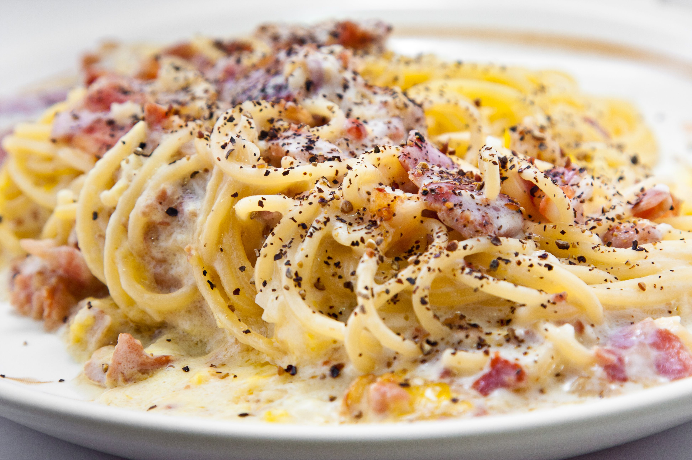

Ingredientes (2 personas)
| Producto | Cantidad |
|---|---|
| espaguetis | 200g |
| guanciale (o panceta) | 120g |
| yemas de huevo | 3 |
| huevo entero | 1 |
| queso Pecorino Romano | 50g |
| pimienta negra molida | al gusto |
| sal | al gusto |

Elaboración
- Pon a hervir abundante agua en una olla grande con una pizca de sal y cuece los espaguetis al dente siguiendo las instrucciones del paquete.
- Corta el guanciale en tiras finas y dóralo en una sartén a fuego medio sin añadir aceite hasta que esté crujiente. Retira del fuego y reserva.
- En un bol, bate las yemas junto con el huevo entero, el queso Pecorino rallado y abundante pimienta negra recien molida hasta obtener una mezcla homogénea.
- Cuando la pasta esté lista, escúrrela reservando medio vaso del agua de la cocción.
- Añade la pasta directamente a la sartén con el guanciale (fuera del fuego para que el huevo no se cuaje).
- Vierte la mezcla de huevo y queso sobre la pasta caliente, añadiendo un chorrito del agua de cocción reservada.
- Remueve enérgicamente hasta crear una crema suave y sedosa.
- Sirve inmediatamente con un poco más de queso y pimienta negra por encima.